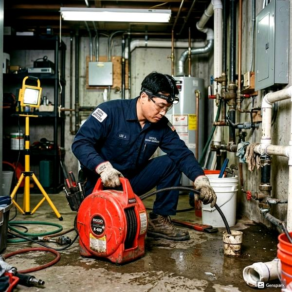
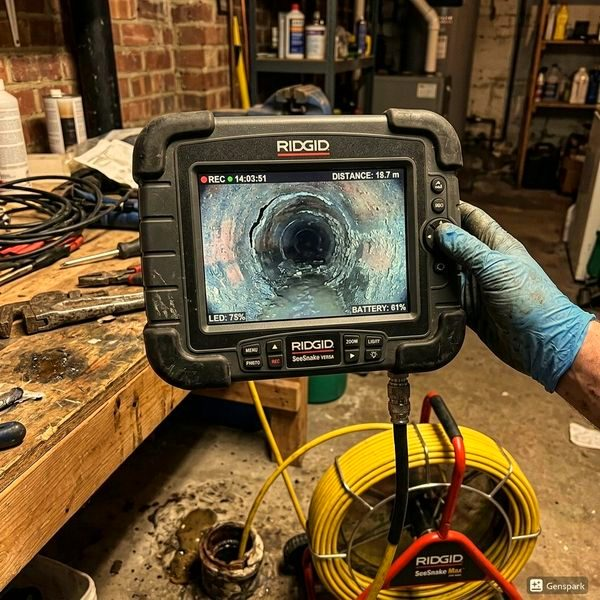
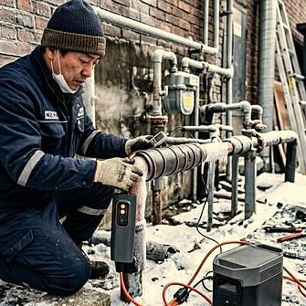

누수 탐지와 비파괴 검사 - 벽 속 배관 진단 기술
2026년 4월 12일 | 제우스시설관리
벽이나 바닥에서 물이 스며 나오는데 어디서 새는지 모를 때, 예전에는 벽을 뜯어봐야 했습니다. 이제는 비파괴 누수 탐지 기술로 벽을 부수지 않고도 정확한 누수 지점을 찾아냅니다. 제우스시설관리는 최신 탐지 장비로 정밀 진단합니다.

관로탐지기는 전자기파나 음향을 이용해 벽 속 배관의 위치와 상태를 파악하는 장비입니다. 배관의 경로를 지표면에 표시할 수 있어, 어디에서 누수가 발생하는지 정확히 알 수 있습니다. 콘크리트, 타일, 대리석 등 다양한 마감재 아래의 배관도 탐지 가능합니다.
내시경 카메라는 직경 6mm의 초소형 카메라를 배관 내부에 삽입하여 실시간 영상으로 확인하는 장비입니다. 배관 내부의 균열, 부식, 막힘, 이물질을 직접 눈으로 볼 수 있습니다. 최대 30m 길이의 배관까지 진입 가능하며, 영상을 녹화하여 고객에게 보여드립니다.

열화상 카메라는 벽면의 온도 차이를 감지하여 누수 부위를 찾는 장비입니다. 물이 스며든 부분은 주변보다 온도가 낮아 열화상에서 파란색으로 나타납니다. 눈에 보이지 않는 미세 누수도 감지할 수 있습니다.

비파괴 검사로 정확한 누수 위치를 파악하면, 최소한의 시공으로 수리가 가능하여 비용과 시간을 대폭 절약할 수 있습니다. 제우스시설관리는 28분 내 출동하여 현장에서 즉시 진단합니다. 전화: 010-4406-1788